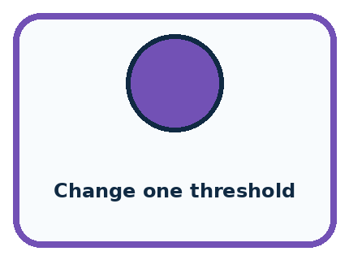
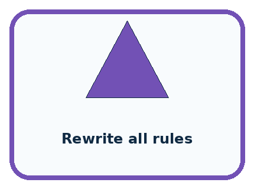
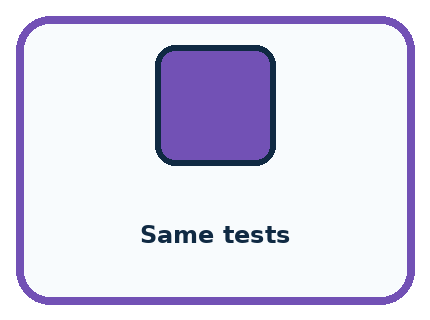
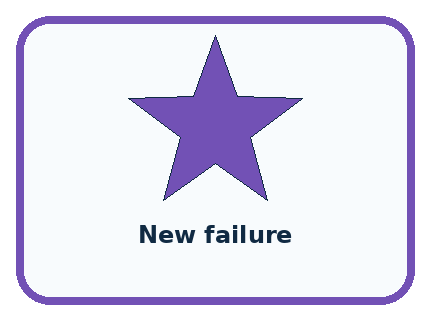

AI Academy · Level 1 · Grade 6 · Week 35 · Student lesson
Improve One Cause
Learn to understand, design, build, test and explain AI systems responsibly.
Project: Helpful Classroom Sorter
THE CONNECTED WEEK
Locate the defect. Change its cause. Check what used to work.
Repair equality while preserving quiet, validation and order, then fix the candidate before final evaluation.
Keep one habit: Keep the failure → make the targeted edit → rerun prior successes → retain every version.
Main lesson · Section 1
Did the repair preserve what already worked?
Target an evidenced cause and inspect every changed outcome.
Start with a repair that introduces another failure
A repair can fix equality while breaking the quiet requirement. Check the located defect and previously correct behaviour under unchanged requirements, and keep the old evidence.
Recall the inclusive time requirement
The faulty S comparison rejects an activity that takes exactly the available time. Which requirement does this break?
Close your notes first. A rough first answer helps us choose the right starting point; it is not a score for your ability.
After trying, check the relevant lesson or ask your teacher. Change the part of your explanation that the evidence shows was wrong.
Your learning goals
I can repair a located defect without changing the agreed requirements.
I can check the repaired case and earlier successful behaviour.
I can preserve versioned evidence and fix a candidate before final evaluation.
Earlier wording, alternatives and picture transcripts
Your learning target
Remember before reading
Without opening the old lesson, explain one key idea from Test Edge Cases and Fairness. Give an example and a mistake that the idea helps you avoid.
Without opening the old lesson, explain one key idea from Build a Paper Prototype. Give an example and a mistake that the idea helps you avoid.
Without opening the old lesson, explain one key idea from Find a Real Problem. Give an example and a mistake that the idea helps you avoid.
An improvement should target evidence from a failure, not random change.

LEARNING TARGET Version A makes four errors. Version B makes one after lighting, labels and rules all change. What can you conclude, and how would you isolate the effect of lighting?
Learner name:
Readiness for the connected explanation
This week’s end goal
By the end, I can repair one identified cause and rerun cases that previously passed.
Main lesson · Section 2
Keep the activity requirements unchanged during repair
Use the same catalogue and evidence-linked version labels.
Define repair and regression checks
Finding a failure is useful only if you can explain and check the repair. This week you will locate an incorrect comparison, change it in a labelled version, and test both the revealing case and behaviour that worked before.
A repair can solve one problem while introducing another, so one newly passing example is not enough.
Read the unchanged activity catalogue
Keep catalogue B version 1 in order: B1 Bookmark drawing, 10 minutes, quiet Yes; B2 Story circle, 8 minutes, quiet No; B3 Pattern puzzle, 12 minutes, quiet Yes; B4 Tower challenge, 15 minutes, quiet No.
These fictional values assume materials are available. Inputs are whole minutes from 0 to 30 inclusive and Quiet required Yes or No. No allows either quiet or nonquiet activities.
Preserve the complete contract and reset rules
A candidate fits when its duration is no more than the available minutes AND either quiet is not required or the activity is quiet. Return the first fit with a correct reason.
Valid input with no fit gives no match after all rows fail. Invalid or missing input needs clarification before search. Each new run starts with validation and a cleared output, then the first row if valid.
Suggestions do not book or publish anything. These written rules are not a model fitted from examples.
Earlier wording, alternatives and picture transcripts
PICTURE STORY
Look Closely Before You Explain
Pictures give clues; evidence tells us what the clues mean.

MYSTERY The sorter misclassifies worn labels, so the team changes the text-reading rule or adds a safe visual clue while keeping other parts fixed.
What do you notice?
Name three visible details without explaining them yet.
Circle the detail most connected to the system's decision.
Name one detail that may be decoration or distraction.
Make a first prediction and state the clue that supports it.
My observations, prediction, and evidence:
GOOD THINKING A prediction can change when stronger evidence appears.
A closer explanation
Main lesson · Section 3
Locate S0’s comparison defect and save S1
Repair equality without changing quiet, validation, order or stopping.
Inspect the controlled repair cycle
A repair with evidence
Connect the failing trace to the broken requirement
S version 0 follows the P1 process except that its time check uses strictly less than. On 10 Yes with catalogue B version 1, it reports no match. The expected result is B1 because 10 fits exactly and B1 is quiet.
Compare the saved instruction with the trace: the cause is the exclusion of equality, not a need to change the catalogue or expected answer.
Write the exact change record and preserve the original
Create S version 1 by replacing only the time comparison with no more than. Keep validation, the quiet condition, catalogue order, advancement and stopping rules.
Write a change record naming S0, S1, the failing 10 Yes case, the comparison changed and why equality belongs in the rule. Retain the old version and failed trace; do not overwrite them with the new result.
Point to the input, the deciding step and the result in this week’s visual. Explain the same step in ordinary words. A picture helps when you can say what each part represents.
Earlier wording, alternatives and picture transcripts
VISUAL MECHANISM
Input → Process → Output
Follow the information instead of imagining magic inside the machine.


INPUT failure record and suspected cause
PROCESS change one responsible rule, input, or threshold
OUTPUT same tests rerun with before/after evidence
CORE IDEA An improvement should target evidence from a failure, not random change.
UNDER THE HOOD Controlled iteration links an intervention to an observed outcome. Holding test cases and unrelated components constant strengthens causal inference.
Improvement claims must include regressions and tradeoffs, not only repaired cases.
Draw a fresh example with all three stages:
A closer explanation
Connect the picture and the explanation
Main lesson · Section 4
Compare targeted repairs with uncontrolled changes
Review every new failure, not only a higher total pass count.
Pictures paired with their evidence


The case to investigate
CASE 1 — Change one threshold Clue: targeted intervention. Meaning: interpretable.


The case to investigate
CASE 2 — Rewrite all rules Clue: many causes changed. Meaning: weak evidence.


The case to investigate
CASE 3 — Same tests Clue: before/after comparable. Meaning: stronger evidence.


The case to investigate
CASE 4 — New failure Clue: old case now breaks. Meaning: regression.
Discuss the confusing pair
Which two pictures are easiest to confuse? What evidence separates them?
Keep the limit in view
BOUNDARY A higher pass count can hide a serious new failure; review every changed outcome.
Earlier wording, alternatives and picture transcripts
PICTURE GALLERY
Four Cases, Four Clues
Use the visual cue, then read the evidence carefully.
CASE 1 — Change one threshold Clue: targeted intervention. Meaning: interpretable.
CASE 2 — Rewrite all rules Clue: many causes changed. Meaning: weak evidence.
CASE 3 — Same tests Clue: before/after comparable. Meaning: stronger evidence.
CASE 4 — New failure Clue: old case now breaks. Meaning: regression.
Change one thing in the pictured case
Change: Use U2, which changes < to ≤ and keeps the quiet check.
Prediction: At 8 return A; at 6 return none.
Reason: Equality is repaired while B remains ineligible because it is noisy.
Main lesson · Section 6
Compare targeted repairs with introduced regressions
Start with the main activity S/T versions, then compare the separate two-activity U example.
Inspect T1 against the main activity requirements
Consider a different proposed repair, T version 1. It accepts equal times but accidentally removes the quiet check. It fixes 10 Yes, yet now returns B2 for 9 Yes.
That second request correctly returned no match under S0 because B2 is not quiet. Previously correct behaviour has become wrong: this is a regression.
| Case with catalogue B version 1 | Required result | Outputs from the stated instructions |
|---|---|---|
| 10 Yes; equality repair | B1 with a valid reason | S0 no match; T1 B1; S1 B1 |
| 9 Yes; quiet regression check | No match with a valid reason | S0 no match; T1 B2; S1 no match |
| 8 No; another equality case | B2 with a valid reason | S0 no match; T1 B2; S1 B2 |
| 6 No; exhaustion check | No match with a valid reason | S0 no match; T1 no match; S1 no match |
These outputs are worked predictions from the described versions. Your own test record must contain the actual runs and their reasons. T1 should not replace the candidate merely because it passes the first row.
For S1, check the revealing equality cases and rerun all four routine cases from Week 33, then validation and the labelled catalogue variations from Week 34.
A full pass still needs both the required output and a correct explanation.
Read the two activities and faulty revisions
A fictional quiet-activity chooser has a boundary bug and a proposed repair.
A: quiet Yes, 8 minutes; B: quiet No, 5 minutes. Request quiet required Yes.
U0 accepts only duration<available time. U1 fixes ≤ but accidentally removes the quiet requirement.
Inspect the labelled repair comparison


Trace the equality fix and quiet regression


Read the picture one step at a time
Explain why merely selecting something is insufficient
A repair must preserve the full contract, not just make one failing example pass. The quiet condition and duration comparison are separate requirements.
Changing only the inequality targets the recorded cause; removing the quiet check changes another behavior. Save previously passing cases to reveal such regressions.
Read the labelled picture: Explain why “our repaired version now picks something” is not enough to show success at 6.
Predict the targeted U2 repair
Before opening the U2 picture, replace < with ≤ while keeping the quiet condition in the two-activity A/B example. Predict outputs at eight and six minutes with quiet required Yes. Which former success must remain correct?
Check the preserved quiet condition


Keep the two-example limit
Two examples establish only these outcomes; further cases are needed before generalising the repair.
Earlier wording, alternatives and picture transcripts
WORKED EXAMPLE
Watch the Reasoning, Not Just the Answer
Every step connects a claim to observable evidence.

CASE The sorter misclassifies worn labels, so the team changes the text-reading rule or adds a safe visual clue while keeping other parts fixed.
STEP 1 — OBSERVE failure record and suspected cause
STEP 2 — TRACE change one responsible rule, input, or threshold
STEP 3 — CONCLUDE same tests rerun with before/after evidence
MODEL REASONING Name the evidence, suspected cause, single change, and predicted effect before editing. Rerun the full fixed suite, compare case by case, and keep the change only if benefits outweigh new failures.
DO NOT OVERCLAIM A higher pass count can hide a serious new failure; review every changed outcome.
What new evidence could change this answer?
A closer explanation
Learn from the worked case
Cover the result before checking it. Say what is given, choose the procedure, and follow one step at a time. Then uncover the result and explain your first mismatch. Ask why a step is allowed, not only what number it produces.
A pictorial worked case: Improve One Cause
The facts we will use


Why this result follows
What this example does not establish
Change one thing: Use U2, which changes < to ≤ and keeps the quiet check. Predict the result before checking the explanation. What remains the same?
Main lesson · Section 7
Keep a justified candidate for final evaluation
If no defect is evidenced, retain the tested version instead of manufacturing a change.
Choose repair from actual failure evidence
If your own P1 already passes the development set, do not introduce a defect just to claim an improvement.
Use the supplied S example to practise repair, and report that no change was needed in your saved version for the tested cases. If your version fails, retain the evidence, locate the cause and label the next repair.
A new label alone does not prove a better version.
Save the candidate before reserved cases are opened
Save a candidate with its complete instructions, required catalogue data, input rules, change history and development results. State unresolved failures and limitations. Keep this version unchanged during the final evaluation.
Do not inspect reserved final cases to decide which repair to make.
If you revise after seeing final results, retain those results as belonging to the old version and treat the seen cases as development evidence; they are no longer an unseen evaluation for the revision.
Repair the weak change-history example
Repair both broad claims
CLAIM A Any change after a failure counts as improvement.
CLAIM B Retest only the failed case to save time.
STRONG ANSWER FRAME I claim ______ because the evidence shows ______. The process is ______. One limit is ______.
Earlier wording, alternatives and picture transcripts
COMPARE
Same Result, Different Reason
A comparison helps reveal the true concept boundary.
| Case | Evidence | What it shows |
|---|---|---|
| Change one threshold | targeted intervention | interpretable |
| Rewrite all rules | many causes changed | weak evidence |
| Same tests | before/after comparable | stronger evidence |
| New failure | old case now breaks | regression |
Repair two tempting claims
Repair:
Repair:
A closer explanation
Main lesson · Section 8
Practise: rerun the repair and earlier successful paths
Keep worked predictions separate from actual observed runs.
Plan routine, equality and validation checks
Write expectations before running S1. Use B version 1 for 11 Yes, 9 No, 6 No and 9 Yes; include the revealing 10 Yes and 8 No.
Add 0 Yes, 30 Yes, 31 Yes, blank minutes with Yes, 10.5 Yes and 10 Maybe to check valid endpoints and invalid fields. Keep cases and results separated by version, and compare with the manual baseline under the same conditions.
Retain the labelled later-row catalogue variations
Retain the catalogue variation tests: B version 2 changes only B1 time to 20, giving B3 for 12 Yes.
B version 3 has times 20, 18, 17 and 15 for B1 to B4, with the original quiet labels and order; it gives B4 for 15 No and no match for 15 Yes.
These cases check later successful paths and the quiet condition under changed data. Label each test with the catalogue it actually uses.
Distinguish regression from an existing defect
Operate the fixed-version set in W2
Use workbook W2 for the connected example “Improving and checking regressions”. First fill the input and rule boxes. Try the middle steps before asking for a hint. After a hint, try the next step yourself.
| Plan | Do | Check |
|---|---|---|
| What is given? Which rule or procedure applies? | Record each intermediate step. | Does the result follow? What remains unknown? |
Explain your trace to a partner. Your partner points to one step to check. Swap roles on the next case. Each person writes their own explanation.
Challenge the one-example guarantee
Use the worked case for Improving and checking regressions. Proposed explanation: “One repaired example proves improvement everywhere”. Decide whether this explanation is supported.
Point to the step or supplied fact that decides; explain your repair if needed.
Answer on your own before discussion. If you are unsure, say which step you need help with.
Return to the quiet-regression example
Explain why “our repaired version now picks something” is not enough to show success at 6.
This is supported practice. Keep the separately named independent case for an attempt before feedback.
Earlier wording, alternatives and picture transcripts
GUIDED PRACTICE
Try It, Check It, Explain It
Use support now so you can succeed independently later.

Explain how the picture story demonstrates this idea: An improvement should target evidence from a failure, not random change.
Use a fresh example to explain root cause.
Trace a new input → process → output example.
Find and repair the error in: Retest only the failed case to save time.
Invent one edge case and name the safe response.
PARTNER CHECK Point to the evidence. Do not accept an answer that only repeats the vocabulary word.
A closer explanation
Practise with less help: Check the repair and earlier behaviour
Check your reasoning
Explain the picture
Main lesson · Section 9
Investigate an explicit one-cause repair and regression set
Use the supplied defect rather than inventing a failure in an already-correct project.
The source defect, expected result and controlled edit
One-cause paper repair cycle using the supplied main activity example. S0 is P1 except its time condition is duration<available minutes. Save S0, its (10,Yes) no-match failure and the expected B1 result. Create S1 changing only < to ≤, leaving all other validation, quiet, order and stopping rules unchanged. If your own P1 has no evidenced defect, use this supplied example for repair practice and keep your actual version unchanged.
Predict, rerun and preserve the complete evidence
Before operating S1, write expectations for the original R cases (11,Yes),(9,No),(6,No),(9,Yes), the equality cases (10,Yes),(8,No), the validation/endpoints (0,Yes),(30,Yes),(31,Yes),(blank,Yes),(10.5,Yes),(10,Maybe), and the labelled B version 2/3 variations defined in the lesson. Run the manual baseline and S1 under identical conditions, record actual results and trace references, and retain all failures. Separate unrun cases. Save the full change history and fixed candidate before the teacher reveals reserved final cases.
Keep a normal case and an edge case clearly separated.
Record what happened—even when it does not match your prediction.
Explain the result, one limitation, and the next useful test.
Keep versions, actual traces and evaluation limits
| Case | Prediction | Observed result | What it means |
|---|---|---|---|
| Normal | |||
| Edge |
Before trying: what do I expect, and why? While trying: which step could first go wrong? Afterwards: what did I actually observe, and what should change? Keep “not run” if you only traced the procedure.
Earlier wording, alternatives and picture transcripts
EXPLORER LAB
One-Cause Improvement Cycle
Predict first, test honestly, and explain what the evidence means.

State your prediction before the result is known.
Complete the task: Revise one rule or input and rerun the same tests.
INDEPENDENCE After support is removed, repeat the proof with a fresh case.
Plan → try → check
Main lesson · Section 14
Try alone: audit the different equipment repair
Compare U0/U1 against the equipment contract before proposing U2.
The independent catalogue and version changes
Equipment catalogue E lists E1 first with capacity 4 and E2 second with capacity 8. Valid whole group sizes are 1 to 10. Choose the first capacity at least the group size, or no match; invalid input needs clarification.
Old U0 uses strictly greater capacity and stops at the first fit. Proposed U1 includes equality but keeps searching and returns the last fit. Independently compare U0, U1 and the requirement for groups 8 and 3.
Identify the repair and regression, propose U2 and give one validation check. No booking occurs.
Keep your first attempt
Attempt this case before feedback. Record any help. Earlier examples below are further practice; a case already practised with feedback cannot establish fresh transfer.
Your teacher has the independent answer and scoring criteria. Complete the matching workbook week to keep your practice evidence together.
Use feedback afterwards
Attempt the independent case before hints. Record whether you worked alone, used a hint or followed a model. After feedback, fix the first unsupported step and explain why it changed.
A later check uses a changed case, not a copied answer.
Earlier wording, alternatives and picture transcripts
Independent case: Audit a different proposed repair
Week 35 Independent application
Close the worked explanation. Apply the idea to this different question without copying.
Dim photos fail. You change the lighting and all decision rules together; performance improves. Can you tell which change helped? Design a clearer comparison.
My answer, with a trace, calculation or supporting evidence
Create and test
Change one relevant detail. Predict the result before testing. Include a boundary or missing-information case when it helps reveal a limit.
My changed input and expected result
Connect to your project
If the sorter has an evidenced defect, save a new version with one evidence-linked change and a before/after test table; otherwise retain the current tested version and state that no repair was needed.
The evidence I will keep
Transfer practice from the original programme
Version A makes four errors. Version B makes one after lighting, labels and rules all change. What can you conclude, and how would you isolate the effect of lighting?
Use feedback to improve
Main lesson · Section 11
Transfer evidence-linked repair to the sorter portfolio
A repair is conditional on a located defect, not a compulsory version-number change.
Connect the two contexts and the no-change option
The connected sequence repairs the activity prototype only when evidence requires it. Transfer that method to your existing sorter portfolio here. A new version needs a justified change; if your sorter already meets the tested requirements, retain it and report that result. Keep sorter and activity regression records distinct, and do not change a candidate during its final evaluation.
This week’s sorter evidence
THIS WEEK'S CHECKPOINT If the sorter has an evidenced defect, save a new version with one evidence-linked change and a before/after test table; otherwise retain the current tested version and state that no repair was needed.
Maintain sorter regression tests and compare complete version traces, retaining new failures rather than hiding them.
Inspect the cause, intervention and retained checks
What real classroom need does this serve?
What information is necessary—and what should stay private?
What happens inside the process?
What normal and edge cases will you test?
When should it say not sure or ask a person?
Inspect new failures as well as totals
RESPONSIBLE DESIGN A higher pass count can hide a serious new failure; review every changed outcome.
Earlier wording, alternatives and picture transcripts
PROJECT
Helpful Classroom Sorter
Build one coherent system across the year, one evidence-based decision at a time.


My project decision:
Evidence for your project
Main lesson · Section 16
Finish: explain the repair, regression and limits
Close your notes and point to the unchanged requirement behind your judgment.
Your exit explanation
Close your notes. Explain this goal in your own words: Repair a located defect without changing the agreed requirements
Choose the next regression check
If you are unsure, return to the worked picture and explain one arrow. If you are ready, change an input or assumption and justify your prediction.
Save your workbook evidence. At the next review, try a different case before opening your old answer.
Reference bank and extra practice
Choose the reference that helps your next step.
Your quick word guide
Reference · Section 5
Your quick word guide
Use the words to explain a particular step, record or limit.
Core vocabulary
| Word | Meaning | My example |
|---|---|---|
| root cause | earliest responsible reason for a failure | |
| controlled change | one targeted modification while other factors stay fixed | |
| retest | repeat the same case after a change | |
| regression | previously working behavior that becomes worse |
Terms for the connected explanation
| Word | Meaning |
|---|---|
| Defect | A fault in the instructions or implementation that can cause incorrect behaviour |
| Repair | A change intended to correct a located defect |
| Change record | A note of what changed, why, and which versions and tests support it |
| Fixed candidate | A saved version kept unchanged while a specified evaluation is run |
Repair a claim using a word
CLAIM TO REPAIR Any change after a failure counts as improvement.
Use one vocabulary word and one piece of evidence to repair it:
Earlier wording, alternatives and picture transcripts
VOCABULARY
Words You Can See and Use
The badge is a memory cue; the definition does the real thinking work.


Misconception detective
WORD POWER A strong definition helps you decide something in a new case.
Words used in the closer explanation
Choose a stronger thinking challenge
Reference · Section 10
Choose a stronger thinking challenge
Choose the next useful challenge rather than treating the whole ladder as compulsory.
Pick your next step
RECALL Define root cause.
EXPLAIN An improvement should target evidence from a failure, not random change.
TRACE Show the input, process, and output.
DIAGNOSE Repair: Any change after a failure counts as improvement.
TRANSFER Apply the idea to a new home or classroom case.
CREATE Design one revealing test.
DEFEND Give a claim, evidence, mechanism, limit, and safe action.
Earlier wording, alternatives and picture transcripts
PRACTICE LADDER
Climb from Recall to Defense
Each step asks for a stronger kind of understanding.

RETRY RULE A coached answer becomes mastery only after you solve a different case independently.
Reference: check your explanation
Reference · Section 12
Reference: check your explanation
Use after practice. Audit a different proposed repair is the selected independent case.
Check the evidence and its limit
□ Name or draw the fresh case.
□ Trace input, process, and output.
□ State the conclusion and strongest evidence.
□ Name one limit, failure, missing clue, or fairness/privacy concern.
□ Explain one safe next action or improvement.
Record support
My level: □ Not yet □ With one hint □ Independently □ I can teach it
Earlier wording, alternatives and picture transcripts
MASTERY
Checklist for explaining this week’s idea
Use after practice. Audit a different proposed repair is the selected independent case.

EXPLANATION CHECK Locate the defect, preserve all other requirements, rerun earlier successes and retain versioned evidence before fixing a final candidate.
Independent evidence:
SELF-CHECK Name the evidence, suspected cause, single change, and predicted effect before editing. Rerun the full fixed suite, compare case by case, and keep the change only if benefits outweigh new failures.
NEXT BRIDGE Carry today's evidence habit into: Expo and Defense.
Extra practice: A fair comparison changes one cause
Reference · Section 13
Extra practice: A fair comparison changes one cause
Try the question before opening its worked explanation.
Read the supplied case and question
The team changes lighting, labels and rules together; errors fall from four to one.
Can it identify the cause of improvement?
Your explanation
Which detail supports the answer, and why does it matter?
Check after trying
No. Several factors changed. Compare one planned change at a time with controlled conditions.
| Evidence or stage | Value or result |
|---|---|
| Before | Four errors under recorded conditions |
| Confounded revision | Lighting, labels and rules all changed |
| Controlled revision | Change one planned factor and retest |
Earlier wording, alternatives and picture transcripts
Week 35 Worked case
Use the supplied details to practise the weekly concept before attempting the independent question. This case extends the illustrated lesson.
The situation
The question
Worked explanation
Explain it in your own words
Trace the supplied case visually
A fair comparison changes one cause
The team changes lighting, labels and rules together; errors fall from four to one.
Can it identify the cause of improvement?
No. Several factors changed. Compare one planned change at a time with controlled conditions.
Reference: original lesson checklist
Reference · Section 15
Reference: original lesson checklist
Use an additional checklist when it helps inspect your explanation.
Targets and evidence
| By the end, I can | How I will show it |
|---|---|
| Repair a located defect without changing the agreed requirements | Explain the deciding step, show a trace or test, and state one limit. |
| Check the repaired case and earlier successful behaviour | Explain the deciding step, show a trace or test, and state one limit. |
| Preserve versioned evidence and fix a candidate before final evaluation | Explain the deciding step, show a trace or test, and state one limit. |
Keep your route and first prediction
Remember → watch and explain → try with help → investigate → try independently → keep project evidence. Your teacher may spread this lesson across several classes.
Keep your first prediction. Compare it with what the evidence shows and explain any change.
Earlier wording, alternatives and picture transcripts
Start with this question: A fictional quiet-activity chooser has a boundary bug and a proposed repair.
Extra practice: pictures, repair and feedback
Reference · Section 17
Extra practice: pictures, repair and feedback
Attempt each question before opening its explanation. Use one browser or paper copy.
First supported question
A fictional quiet-activity chooser has a boundary bug and a proposed repair.
Which labelled step matches this detail? U1 selects noisy B at 6; fixing equality introduced a new failure.
1. Bad revision
2. Regression case
3. Expected repair
4. Boundary failure
Hint if needed: Read the steps in the pictorial case. Match the supplied detail to the stage that performs or records it.
Practice 1: explain the deciding evidence
Check the first explanation
After your attempt, compare with the supported explanation: Bad revision U1 selects noisy B at 6; fixing equality introduced a new failure. A repair must preserve the full contract, not just make one failing example pass.
The quiet condition and duration comparison are separate requirements. Changing only the inequality targets the recorded cause; removing the quiet check changes another behavior.
Save previously passing cases to reveal such regressions.
Changed-case question
Changed-case practice: Use U2, which changes < to ≤ and keeps the quiet check. Which conclusion is supported by the supplied facts?
1. At 8 return A; at 6 return none.
2. This one example guarantees correct results for every future input.
3. We can decide the result without examining the changed input or the procedure.
Hint if needed: Use the changed condition and the deciding step in the pictorial trace. The answer must say what follows from those facts.
Practice 2: explain the deciding evidence
Check the changed case
After your attempt, compare with the supported explanation: At 8 return A; at 6 return none. Equality is repaired while B remains ineligible because it is noisy.
Repair and save your work
Review Test Edge Cases and Fairness (ai-1/34). Goal: Choose tests just below, at and above a decision boundary. Short practice: Which single boundary run most directly detects the strict-comparison bug, and why?.
Return to this week and explain what you changed.
Review Build a Paper Prototype (ai-1/32). Goal: Build a runnable paper prototype with explicit instructions and visible state. Short practice: What should appear in the test log before and after the repair?.
Return to this week and explain what you changed.
Review Find a Real Problem (ai-1/29). Goal: Describe a specific user difficulty using supplied evidence without inventing its cause.
Short practice: Write a one-sentence project goal and say what evidence would count as a failure.. Return to this week and explain what you changed.
Use Download completed work in the hosted lesson to export your answers, reflections, practice feedback and code-run evidence. Open the HTML copy to read or print it.
Drafts stay in this browser when storage is available; clear drafts on a shared device.
Earlier wording, alternatives and picture transcripts
Use this supported practice once, in the browser or on paper. Keep the reserved independent assessment for a separate first attempt before teacher feedback.
Repair a missing building block
Keep your completed work
Reference: the six-picture journey
Reference · Section 18
Reference: the six-picture journey
Revisit the picture that serves the current question; key diagrams already sit beside the main explanation.
01. Improve One Cause: the case


A fictional quiet-activity chooser has a boundary bug and a proposed repair. Supplied facts: A: quiet Yes, 8 minutes; B: quiet No, 5 minutes. Request quiet required Yes. U0 accepts only duration<available time.
U1 fixes ≤ but accidentally removes the quiet requirement.
Point to the given fact that matters most. Explain why it matters.
02. Follow the deciding steps
Boundary failure: At 8 minutes, U0 rejects A and rejects noisy B: none. → Expected repair: Correct logic must allow A when time equals 8. → Regression case: At 6 quiet-required minutes, correct output is none. → Bad revision: U1 selects noisy B at 6; fixing equality introduced a new failure.
Point to each numbered stage and explain which recorded input it uses.
03. A repair with evidence
A repair with evidence. Keep the failing trace | Save a new version | Rerun the revealing case. Name the broken requirement | Correct the faulty step | Rerun earlier passing cases.
Keep input and catalogue labels | Record what changed | Keep every result and limit
Read the labels and values. Explain the relationship the model shows.
04. Change one thing. Trace what follows.
Original case: U1 selects noisy B at 6; fixing equality introduced a new failure. Changed condition: Use U2, which changes < to ≤ and keeps the quiet check. Expected result: At 8 return A; at 6 return none.
Reason: Equality is repaired while B remains ineligible because it is noisy.
Predict before checking the worked changed-case result. Name what changed and what the supplied facts allow you to conclude.
05. Connect the explanation to its limit


A repair must preserve the full contract, not just make one failing example pass. The quiet condition and duration comparison are separate requirements.
Changing only the inequality targets the recorded cause; removing the quiet check changes another behavior. Save previously passing cases to reveal such regressions.
Limit: Two examples establish only these outcomes; further cases are needed before generalising the repair.
Explain the case, then point to a limit on the claim.
06. Make the idea visible in your project


Maintain sorter regression tests and compare complete version traces, retaining new failures rather than hiding them. Draw your input, deciding step, result and limit.
Supported question: Explain why “our repaired version now picks something” is not enough to show success at 6.
Draw your project trace and justify the deciding step using evidence.